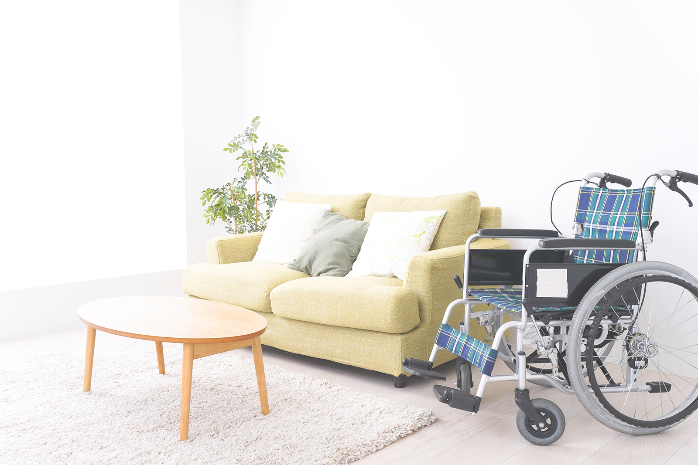
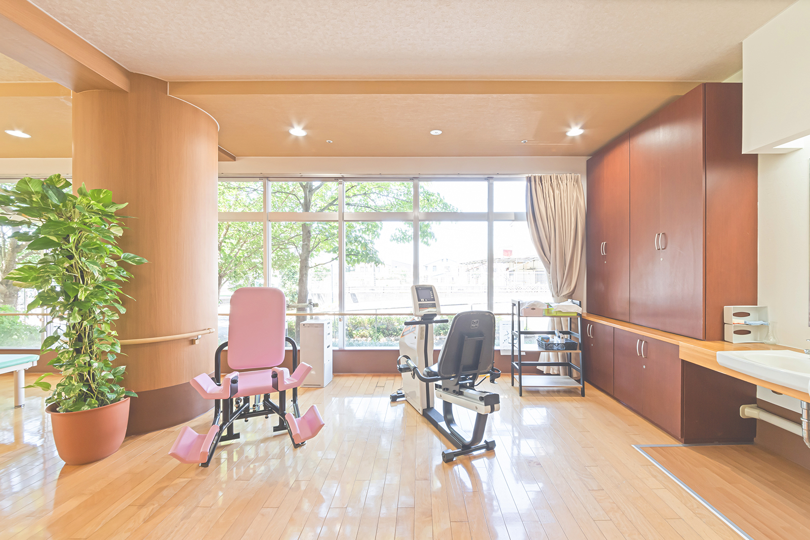
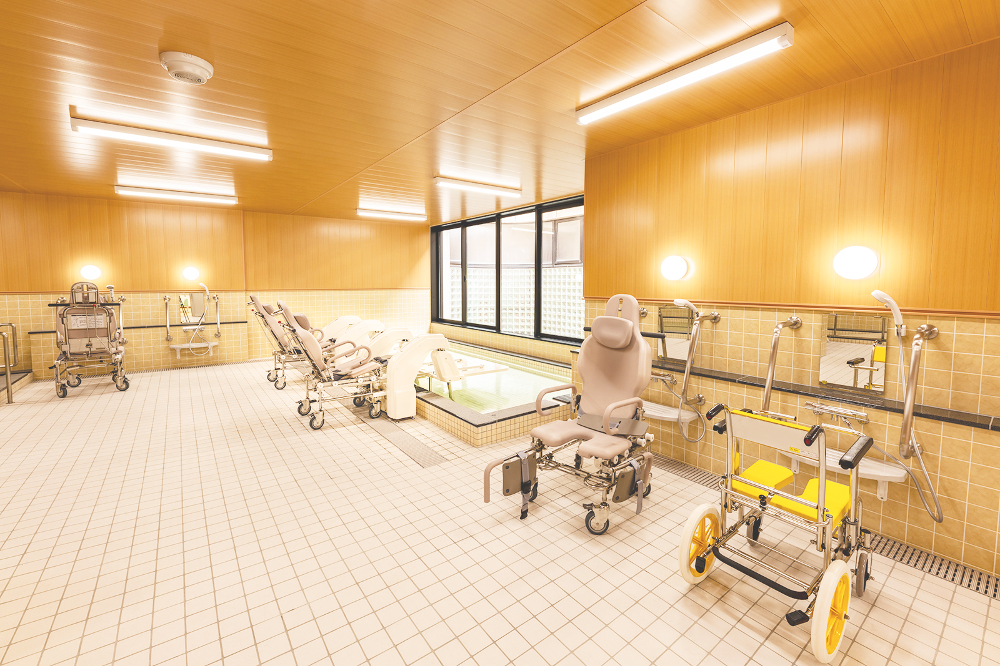
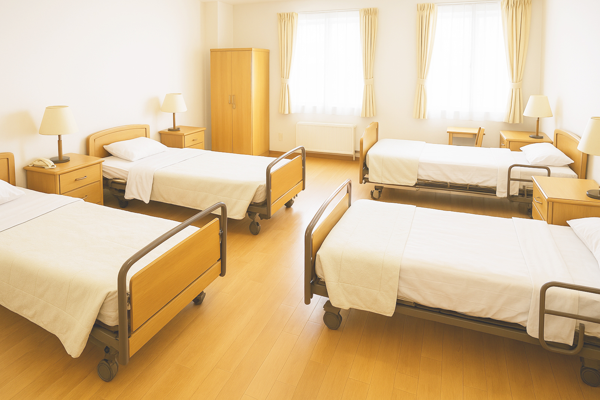
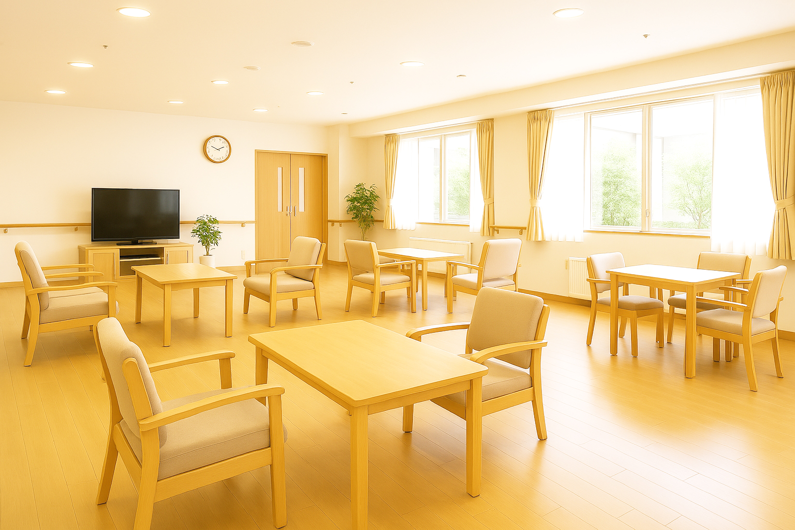

やさしい日の光に包まれた陽だまりの家。
面会室。ここでは家族との面会ができ、ゆったりとした時間が過ごせます。
リハビリ室。ここで利用者様とリハビリをします。
入浴室。一般欲から機械浴まで、利用者さまに合わせた入浴ができます。
利用者さまの居室です。基本4人部屋となっております。
利用者さま共同スペースです。ここでご飯を食べたり、レクリエーションやイベント行事も行っております。
| 施設名 | 陽だまりの家 |
|---|---|
| 施設種別 | 特別養護老人ホーム |
| 入所店員(老人ホーム) | 80名 |
| 入所店員(ショートステイ) | 20名 |
| 建物構造 | 木造一部鉄骨造／2階建て |
| 付帯設備、居室 | 一般居室(各4人一室)、共同ホール、リハビリ室、面会室、浴室、看護室、ナースステーション、相談室 |
ご利用者さまが安心して自分らしく過ごせる毎日を大切に。スタッフがやさしく寄り添いながら、日々の暮らしの中にぬくもりと笑顔を育んでいます。
| 6:00～ | 起床・洗顔・バイタル測定 |
|---|---|
| 7:00～ | 朝食 |
| 9:30～ | リハビリ・娯楽・入浴(火曜日、金曜日) |
| 12:00～ | 昼食 |
| 13:00〜 | 昼寝・自由時間 |
| 15:00〜 | おやつ・レクリエーション |
| 17:00〜 | 夕食 |
| 18:00〜 | 就寝準備・自由時間 |
| 21:00〜 | 就寝 |